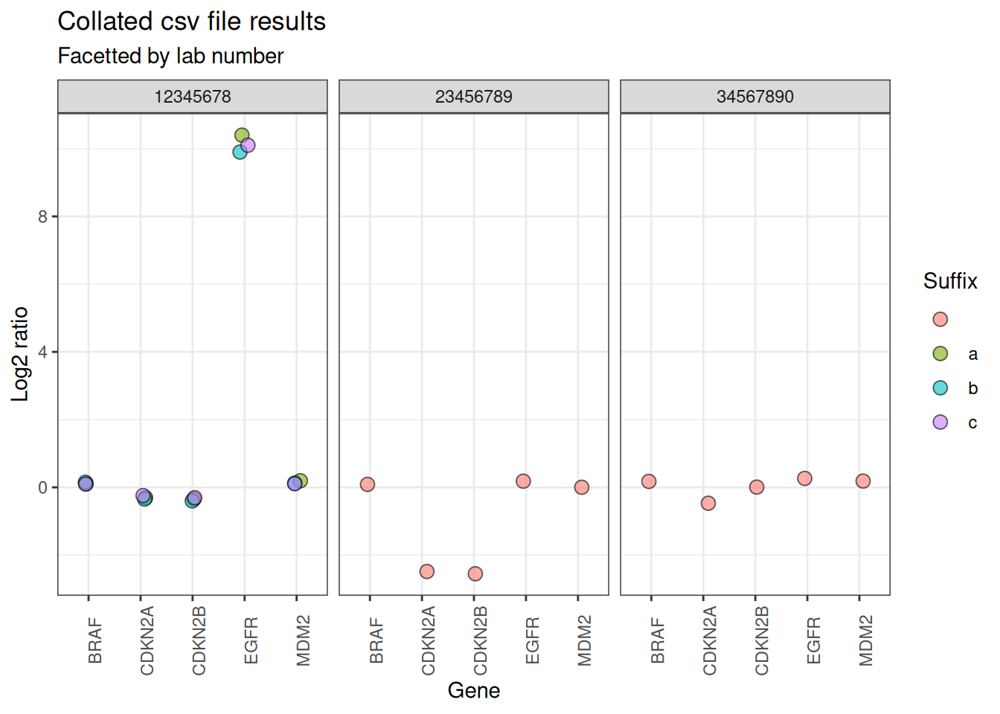

Data analysis with idtools
Development projects, data analysis and the tidyverse
Developing new genetic tests involves working with data.
This means collating data from multiple worksheets, samples and replicates.
It also usually involves combining data which has been stored in different file types (.csv, .xlsx, .vcf etc).
This is called “Exploratory Data Analysis” (EDA) and
A common scenario
A common scenario faced in test development is where there are multiple files of results, and the identifiers for each sample are included in the filename.
Here is an example with 5 csv which contain results for fictional patients. All these files are saved in a folder called “data”.
#> [1] "data//Gene_dosage_WS123456_12345678a_patient1.csv"
#> [2] "data//Gene_dosage_WS123456_12345678b_patient1.csv"
#> [3] "data//Gene_dosage_WS123456_12345678c_patient1.csv"
#> [4] "data//Gene_dosage_WS123456_23456789_patient2.csv"
#> [5] "data//Gene_dosage_WS123456_34567890_patient3.csv"Each csv file contains the dosage (log2 ratio) results for 5 genes of interest.
#> Rows: 5 Columns: 2
#> ── Column specification ────────────────────────────────────────────────────────
#> Delimiter: ","
#> chr (1): gene
#> dbl (1): log2r
#>
#> ℹ Use `spec()` to retrieve the full column specification for this data.
#> ℹ Specify the column types or set `show_col_types = FALSE` to quiet this message.
#> # A tibble: 5 × 2
#> gene log2r
#> <chr> <dbl>
#> 1 EGFR 10.4
#> 2 BRAF 0.1
#> 3 CDKN2A -0.3
#> 4 CDKN2B -0.35
#> 5 MDM2 0.2In order to analyse the data, two steps need to be completed:
The results from each individual file should be collated together in one dataframe
The sample identifiers from each filename should be added to the dataframe as separate columns.
Collating the results
Collating the file contents can be achieved by applying the read_csv function from readr to all the files, using the map function from purrr. Specifying id="filepath" in the call to read_csv adds the full filepath as a new column to the contents of each file.
csv_data <- csv_files |>
purrr::map(\(csv_files) readr::read_csv(csv_files,
id = "filepath",
show_col_types = FALSE)) |>
purrr::list_rbind()
csv_data
#> # A tibble: 25 × 3
#> filepath gene log2r
#> <chr> <chr> <dbl>
#> 1 data//Gene_dosage_WS123456_12345678a_patient1.csv EGFR 10.4
#> 2 data//Gene_dosage_WS123456_12345678a_patient1.csv BRAF 0.1
#> 3 data//Gene_dosage_WS123456_12345678a_patient1.csv CDKN2A -0.3
#> 4 data//Gene_dosage_WS123456_12345678a_patient1.csv CDKN2B -0.35
#> 5 data//Gene_dosage_WS123456_12345678a_patient1.csv MDM2 0.2
#> 6 data//Gene_dosage_WS123456_12345678b_patient1.csv EGFR 9.9
#> 7 data//Gene_dosage_WS123456_12345678b_patient1.csv BRAF 0.15
#> 8 data//Gene_dosage_WS123456_12345678b_patient1.csv CDKN2A -0.35
#> 9 data//Gene_dosage_WS123456_12345678b_patient1.csv CDKN2B -0.4
#> 10 data//Gene_dosage_WS123456_12345678b_patient1.csv MDM2 0.12
#> # ℹ 15 more rowsAdding sample identifiers
The mutate_ids function from idtools can then be applied to the new “filepath” column of the collated data. This function extracts the DNA lab number (labno), replicate suffix and worksheet number from the filepath, and adds each identifier as a new column.
csv_data_with_names <- csv_data |>
idtools::mutate_ids(id_col = filepath)
csv_data_with_names
#> # A tibble: 25 × 8
#> filepath gene log2r labno suffix worksheet labno_suffix
#> <chr> <chr> <dbl> <chr> <chr> <chr> <chr>
#> 1 data//Gene_dosage_WS123456_1… EGFR 10.4 1234… a WS123456 12345678a
#> 2 data//Gene_dosage_WS123456_1… BRAF 0.1 1234… a WS123456 12345678a
#> 3 data//Gene_dosage_WS123456_1… CDKN… -0.3 1234… a WS123456 12345678a
#> 4 data//Gene_dosage_WS123456_1… CDKN… -0.35 1234… a WS123456 12345678a
#> 5 data//Gene_dosage_WS123456_1… MDM2 0.2 1234… a WS123456 12345678a
#> 6 data//Gene_dosage_WS123456_1… EGFR 9.9 1234… b WS123456 12345678b
#> 7 data//Gene_dosage_WS123456_1… BRAF 0.15 1234… b WS123456 12345678b
#> 8 data//Gene_dosage_WS123456_1… CDKN… -0.35 1234… b WS123456 12345678b
#> 9 data//Gene_dosage_WS123456_1… CDKN… -0.4 1234… b WS123456 12345678b
#> 10 data//Gene_dosage_WS123456_1… MDM2 0.12 1234… b WS123456 12345678b
#> # ℹ 15 more rows
#> # ℹ 1 more variable: labno_suffix_worksheet <chr>Analysing the collated data
Now that the data is all together in a single dataframe, including the sample identifiers, it can be more easily analysed.
For example, the data can be quickly filtered to return only the results for the EGFR gene.
csv_data_with_names |>
dplyr::filter(gene == "EGFR")
#> # A tibble: 5 × 8
#> filepath gene log2r labno suffix worksheet labno_suffix
#> <chr> <chr> <dbl> <chr> <chr> <chr> <chr>
#> 1 data//Gene_dosage_WS123456_12… EGFR 10.4 1234… "a" WS123456 12345678a
#> 2 data//Gene_dosage_WS123456_12… EGFR 9.9 1234… "b" WS123456 12345678b
#> 3 data//Gene_dosage_WS123456_12… EGFR 10.1 1234… "c" WS123456 12345678c
#> 4 data//Gene_dosage_WS123456_23… EGFR 0.2 2345… "" WS123456 23456789
#> 5 data//Gene_dosage_WS123456_34… EGFR 0.3 3456… "" WS123456 34567890
#> # ℹ 1 more variable: labno_suffix_worksheet <chr>The data can also be filtered to show the results for the 3 different replicates of sample 12345678.
csv_data_with_names |>
dplyr::filter(labno == "12345678")
#> # A tibble: 15 × 8
#> filepath gene log2r labno suffix worksheet labno_suffix
#> <chr> <chr> <dbl> <chr> <chr> <chr> <chr>
#> 1 data//Gene_dosage_WS123456_1… EGFR 10.4 1234… a WS123456 12345678a
#> 2 data//Gene_dosage_WS123456_1… BRAF 0.1 1234… a WS123456 12345678a
#> 3 data//Gene_dosage_WS123456_1… CDKN… -0.3 1234… a WS123456 12345678a
#> 4 data//Gene_dosage_WS123456_1… CDKN… -0.35 1234… a WS123456 12345678a
#> 5 data//Gene_dosage_WS123456_1… MDM2 0.2 1234… a WS123456 12345678a
#> 6 data//Gene_dosage_WS123456_1… EGFR 9.9 1234… b WS123456 12345678b
#> 7 data//Gene_dosage_WS123456_1… BRAF 0.15 1234… b WS123456 12345678b
#> 8 data//Gene_dosage_WS123456_1… CDKN… -0.35 1234… b WS123456 12345678b
#> 9 data//Gene_dosage_WS123456_1… CDKN… -0.4 1234… b WS123456 12345678b
#> 10 data//Gene_dosage_WS123456_1… MDM2 0.12 1234… b WS123456 12345678b
#> 11 data//Gene_dosage_WS123456_1… EGFR 10.1 1234… c WS123456 12345678c
#> 12 data//Gene_dosage_WS123456_1… BRAF 0.1 1234… c WS123456 12345678c
#> 13 data//Gene_dosage_WS123456_1… CDKN… -0.25 1234… c WS123456 12345678c
#> 14 data//Gene_dosage_WS123456_1… CDKN… -0.3 1234… c WS123456 12345678c
#> 15 data//Gene_dosage_WS123456_1… MDM2 0.1 1234… c WS123456 12345678c
#> # ℹ 1 more variable: labno_suffix_worksheet <chr>And the ggplot2 package from the tidyverse can be used to visualise all the results.

Reading different file types
The same data folder also contains 5 Excel files containing the “noise” metric for each sample replicate. However, the filename format is different: the identifiers are in a different order and hyphens are used instead of underscores.
xlsx_files <- list.files(path = "data/",
pattern = ".*.xlsx",
full.names = TRUE)
xlsx_files
#> [1] "data//Quality-control-patient1-12345678a-WS123456.xlsx"
#> [2] "data//Quality-control-patient1-12345678b-WS123456.xlsx"
#> [3] "data//Quality-control-patient1-12345678c-WS123456.xlsx"
#> [4] "data//Quality-control-patient2-23456789-WS123456.xlsx"
#> [5] "data//Quality-control-patient3-34567890-WS123456.xlsx"
readxl::read_excel(xlsx_files[1])
#> # A tibble: 1 × 2
#> metric value
#> <chr> <dbl>
#> 1 noise 0.2Similarly to before, the contents of the xlsx files can be collated together using the readxl package. The read_excel function from readxl does not include an option to add the filepath as a separate column, so an alternative approach is to use set_names and the “names_to” argument in list_rbind to achieve the same result.
xlsx_data <- xlsx_files |>
purrr::map(\(xlsx_files) readxl::read_excel(xlsx_files)) |>
rlang::set_names(xlsx_files) |>
purrr::list_rbind(names_to = "filename")
xlsx_data
#> # A tibble: 5 × 3
#> filename metric value
#> <chr> <chr> <dbl>
#> 1 data//Quality-control-patient1-12345678a-WS123456.xlsx noise 0.2
#> 2 data//Quality-control-patient1-12345678b-WS123456.xlsx noise 0.3
#> 3 data//Quality-control-patient1-12345678c-WS123456.xlsx noise 0.25
#> 4 data//Quality-control-patient2-23456789-WS123456.xlsx noise 0.3
#> 5 data//Quality-control-patient3-34567890-WS123456.xlsx noise 0.15Then, just as with the csv files, the identifiers can be extracted using mutate_ids, which still works even though the filename format has changed.
xlsx_data_with_names <- xlsx_data |>
idtools::mutate_ids(id_col = filename)
xlsx_data_with_names
#> # A tibble: 5 × 8
#> filename metric value labno suffix worksheet labno_suffix
#> <chr> <chr> <dbl> <chr> <chr> <chr> <chr>
#> 1 data//Quality-control-patien… noise 0.2 1234… "a" WS123456 12345678a
#> 2 data//Quality-control-patien… noise 0.3 1234… "b" WS123456 12345678b
#> 3 data//Quality-control-patien… noise 0.25 1234… "c" WS123456 12345678c
#> 4 data//Quality-control-patien… noise 0.3 2345… "" WS123456 23456789
#> 5 data//Quality-control-patien… noise 0.15 3456… "" WS123456 34567890
#> # ℹ 1 more variable: labno_suffix_worksheet <chr>